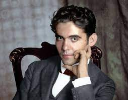
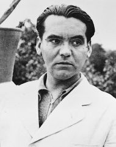

Federico García Lorca, uno de los poetas más insignes de nuestra época, nació en Fuente Vaqueros, un pueblo andaluz de la vega granadina, el 5 de junio de 1898, el año en que España perdió sus colonias. Su madre, Vicenta Lorca Romero, había sido durante un tiempo maestra de escuela, y su padre, Federico García Rodríguez, poseía terrenos en la vega, donde se cultivaba remolacha y tabaco. En 1909, cuando Federico tenía once años, toda la familia -sus padres, su hermano Francisco, él mismo y sus hermanas Conchita e Isabel- se estableció en la ciudad de Granada, aunque seguiría pasando los veranos en el campo, en Asquerosa (hoy, Valderrubio), donde Federico escribió gran parte de su obra.
Más tarde, aun después de haber viajado mucho y haber vivido durante largos períodos en Madrid, Federico recordaría cómo afectaba a su obra el ambiente rural de la vega: Amo a la tierra. Me siento ligado a ella en todas mis emociones. Mis más lejanos recuerdos de niño tienen sabor de tierra. Los bichos de la tierra, los animales, las gentes campesinas, tienen sugestiones que llegan a muy pocos. Yo las capto ahora con el mismo espíritu de mis años infantiles. De lo contrario, no hubiera podido escribir Bodas de sangre.
En sus poemas y en sus dramas se revela como agudo observador del habla, de la música y de las costumbres de la sociedad rural española. Una de las peculiaridades de su obra es cómo ese ambiente, descrito con exactitud, llega a convertirse en un espacio imaginario donde se da expresión a todas las inquietudes más profundas del corazón humano: el deseo, el amor y la muerte, el misterio de la identidad y el milagro de la creación artística.

ALMA AUSENTE No te conoce el toro ni la higuera, ni caballos ni hormigas de tu casa. No te conoce el niño ni la tarde porque te has muerto para siempre. No te conoce el lomo de la piedra, ni el raso negro donde te destrozas. No te conoce tu recuerdo mudo porque te has muerto para siempre. El otoño vendrá con caracolas, uva de niebla y monjes agrupados, pero nadie querrá mirar tus ojos porque te has muerto para siempre. Porque te has muerto para siempre, como todos los muertos de la Tierra, como todos los muertos que se olvidan en un montón de perros apagados. No te conoce nadie. No. Pero yo te canto. Yo canto para luego tu perfil y tu gracia. La madurez insigne de tu conocimiento. Tu apetencia de muerte y el gusto de tu boca. La tristeza que tuvo tu valiente alegría. Tardará mucho tiempo en nacer, si es que nace, un andaluz tan claro, tan rico de aventura. Yo canto su elegancia con palabras que gimen y recuerdo una brisa triste por los olivos.